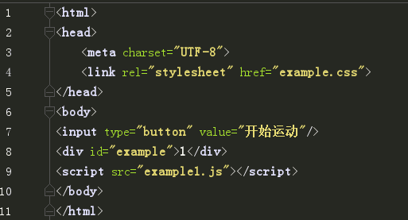
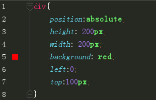
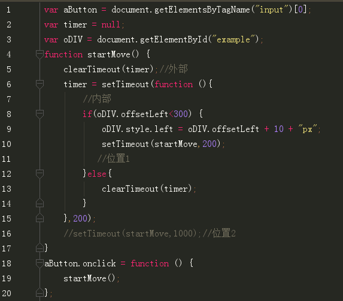
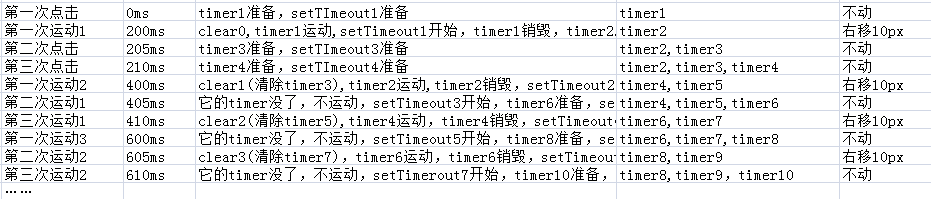
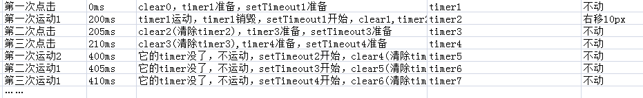
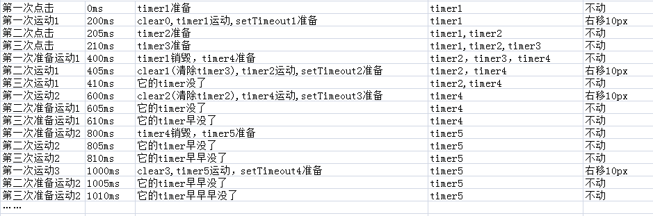
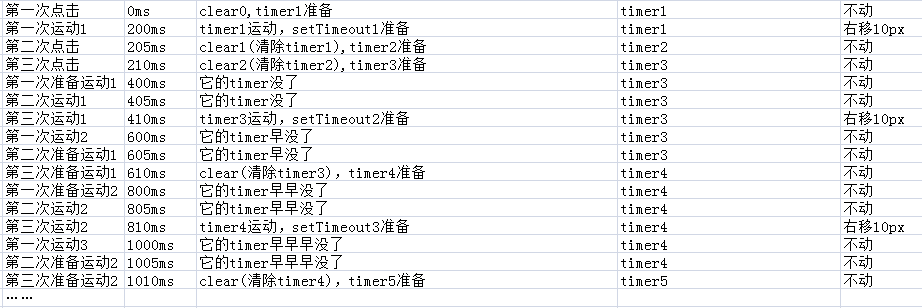

就是一个最简陋的小demo,一个按钮控制一个div每隔一段时间向右移动，由于红宝书的推荐，使用setTimeout代替setInterval。 想使用clearTimeout清除多余的超时调用，以防止万一点击多次时，速度越来越快，于是碰到了一系列的大坑。
先放代码
html
css
js
1.setTimeout在位置2时，clearTimeout在timer内部的情况
点击按钮一次以上以后并不规律的运动
1.setTimeout在位置2时，clearTimeout在timer外部的情况
点击一次以上以后不动
1.setTimeout在位置1时(毫秒数叠加)，clearTimeout在timer内部的情况
疯狂点击后隔一会时间会根据点击次数往后疯狂跑几次，但是之后就恢复正常
注意，这种情况下，setTimeout在timer内部，如果timer被清除，则setTimeout也不能幸免
1.setTimeout在位置1时(毫秒数叠加)，clearTimeout在timer外部的情况
疯狂点击的时候，div块有停顿
